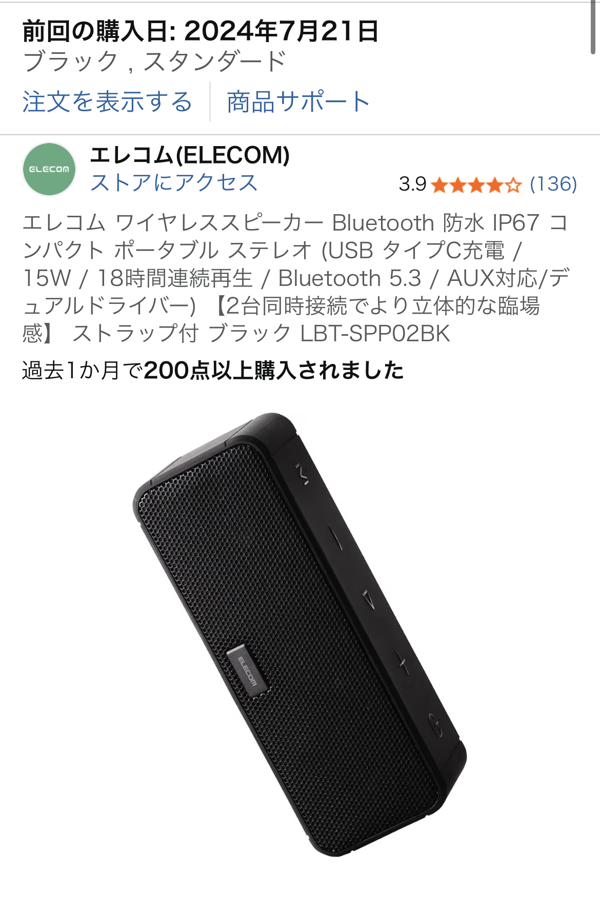

爆音通知Bluetoothスピーカーを実際に使って分かったデメリットとおすすめの使い方【Fire TV用】
※本記事は、実際の口コミと一般的な使用感にもとづいた個人のレビューです。感じ方には個人差があり、購入前には必ず最新の商品情報・仕様を公式ページ等でご確認ください。

Fire TV用に買ったBluetoothスピーカー、最大の不満は「通知が爆音」だった
今回レビューするのは、Fire TVと組み合わせて使うことを想定した爆音通知Bluetoothスピーカー（Fire TV対応モデル）です。 価格だけ見るとコスパは悪くなく、スピーカーとしての音質も「普通に使える」レベル。 しかし実際に使ってみると、電源オン時やペアリング時の音声ガイダンスがとにかく爆音で、静かな夜に使うと家族が驚くレベルでした。
口コミでも「コスパはよいけど通知がうるさい」という評価があり、実際の使用感もまさにその通り。 テレビの音を少し良くしたいだけなのに、起動のたびに大きなアナウンスが鳴るのは、正直かなりストレスに感じました。
良かった点（メリット）
- スピーカーとしての音質は価格相応で、Fire TVの内蔵スピーカーよりは聞きやすい
- Bluetooth接続自体は安定しており、映像との遅延も気になりにくい
- コンパクトで設置スペースを取らない
気になった点（デメリット）
- 「パワーオン」「ペアリング」などの音声ガイダンスが爆音で、音量調整もできない
- 音量を一段上げるだけで一気に大きくなり、細かい調整がしづらい
- 説明書を自分で探しにいかないと詳細設定が分からず、初期設定が面倒
一般的なBluetoothスピーカーとの比較で見える「惜しいポイント」
一般的なBluetoothスピーカーは、電源オン時のサウンドやペアリング音が控えめだったり、そもそも音声ガイダンスがないモデルも多くあります。 それらと比べると、この爆音通知Bluetoothスピーカーは「起動時の快適さ」よりも「分かりやすさ」を優先した設計に感じました。
ただし、Fire TVと組み合わせて使う場合、一度ペアリングしてしまえば接続は安定しており、映画やドラマ視聴中の音切れはほとんどありませんでした。 その意味では「視聴中のストレスは少ないが、起動時のストレスが大きいスピーカー」といえます。
※リンク先はAmazon.co.jpです。価格・在庫・仕様は必ずリンク先でご確認ください。
どんな人に向いていて、どんな人にはおすすめしづらいか
おすすめできる人
- 「多少うるさくてもいいから、とにかく接続が分かりやすい方が安心」という人
- 日中のリビングなど、多少の起動音が気になりにくい環境で使う人
- Fire TVの内蔵スピーカーより少しでも音質を良くしたいライトユーザー
おすすめしづらい人
- 深夜や早朝など、静かな時間帯にテレビを見ることが多い人
- 細かく音量を調整して、環境に合わせて小さな音で楽しみたい人
- 起動音や通知音はできるだけ控えめな方がいい人
特に、家族が寝ている時間にFire TVで動画を見ることが多い方には、起動音の爆音はかなりネックになると感じました。 一方で、日中にゲームや動画を楽しむ用途であれば、コスパ重視の選択肢として検討の余地はあります。ただ私は次買うならアンカーさんにしますがね！
よくある疑問と注意点
Q. 通知音や音声ガイダンスの音量は下げられる？
口コミや実際の使用感ベースでは、本体側で通知音だけを個別に下げる設定は見当たりませんでした。 モデルによって仕様が異なる可能性があるため、購入前に商品ページや取扱説明書を必ず確認してください。
Q. スピーカーとしての音質はどう？
低価格帯のBluetoothスピーカーとしては標準的で、Fire TVの内蔵スピーカーよりは聞き取りやすくなります。 ただし、重低音をしっかり楽しみたい人や音質に強いこだわりがある人には、もう一段上の価格帯のモデルを検討した方が満足度は高いと思います。
※本記事の内容は、あくまで一部ユーザーの口コミと筆者の主観的な使用感にもとづくものであり、効果・感じ方を保証するものではありません。
まとめ：通知の爆音は要注意だが、用途がハマればコスパは悪くない
爆音通知Bluetoothスピーカー（Fire TV対応モデル）は、「スピーカーとしては問題なく使えるが、通知音の爆音が大きなデメリット」という、かなり人を選ぶガジェットでした。 起動音やペアリング音の大きさが気にならない環境であれば、Fire TVの音を手軽に強化できるコスパ重視の選択肢として検討できます。
一方で、静かな環境での使用が多い方や、細かな音量調整を重視する方には、通知音が控えめな別モデルを検討する価値が高いと感じます。 購入前には、商品ページのレビューや最新の仕様を必ずチェックし、自分の視聴スタイルに合うかどうかを確認してから選ぶのがおすすめです。
※アフィリエイトリンクを含みます。購入を強制するものではなく、最終判断はご自身の責任でお願いいたします。